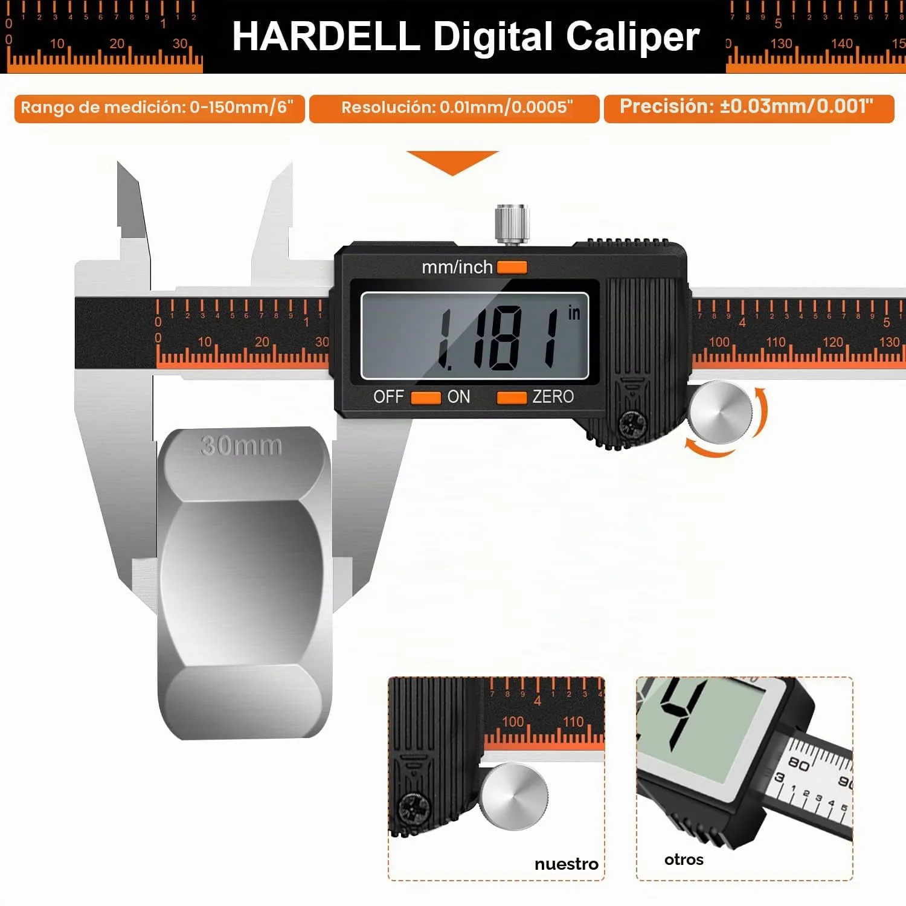
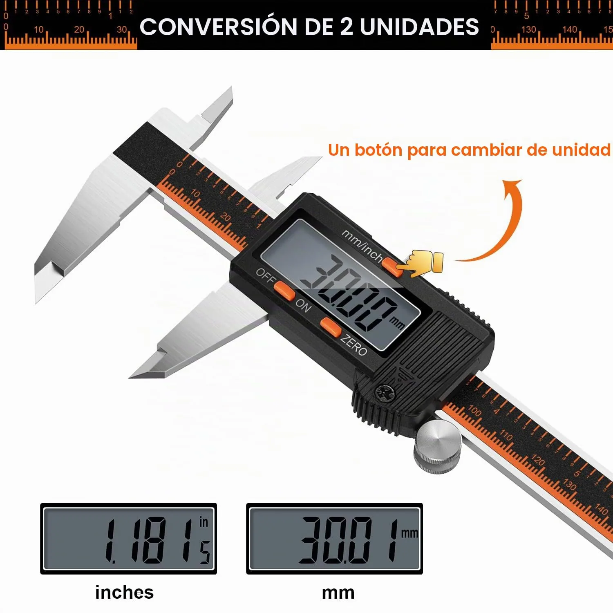
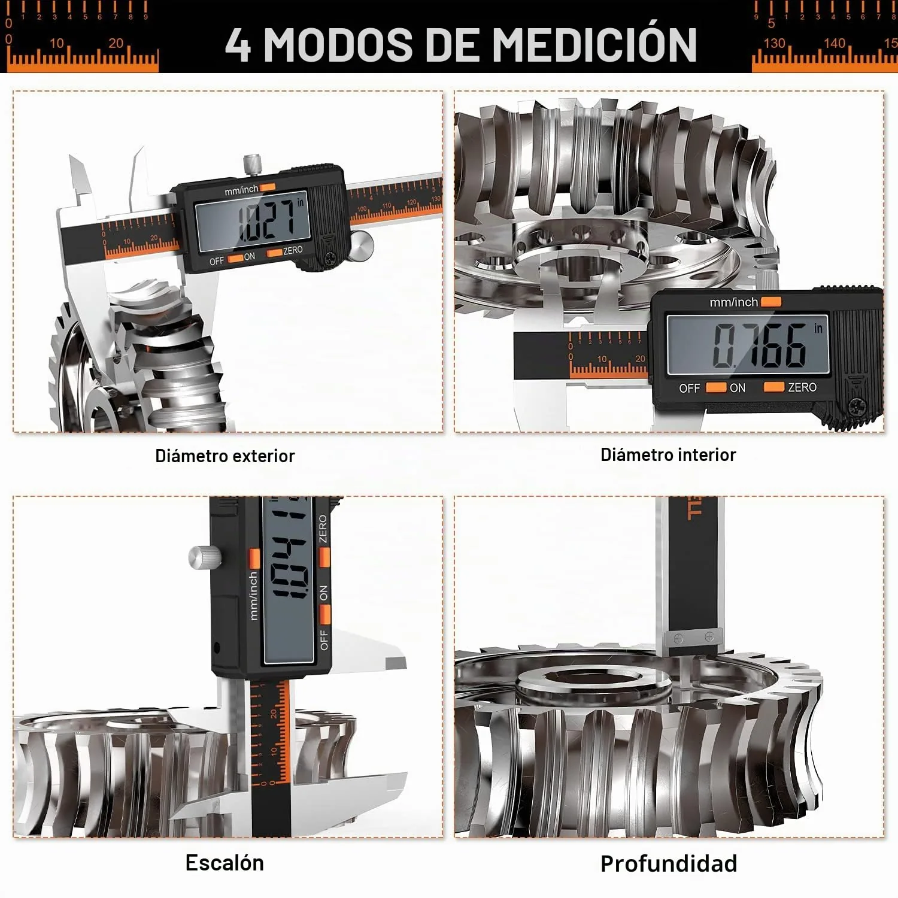
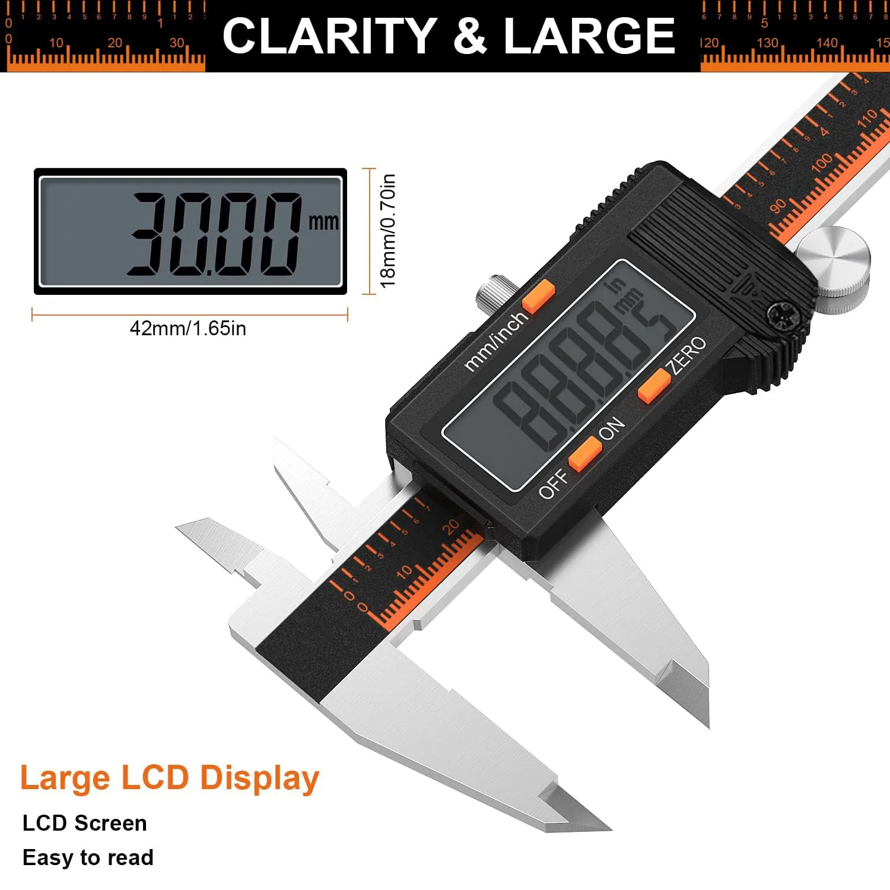

HARDELL
HARDELL Calibre Digital 150mm
Valoración del editor
Puntuaciones editoriales de 0 a 10, comparables entre productos del mismo tipo. No son una puntuación oficial de Amazon.
Ficha técnica
General
| Tipo de accesorio | Calibre digital |
|---|---|
| Compatibilidad | Universal (cualquier pieza o filamento, no específico de una marca de impresora) |
| Material | Acero inoxidable |
| Cantidad | 1 calibrador + estuche + 2 pilas + 1 destornillador + 1 regla de acero |
Otros datos
| Rango de medida | 0-150 mm |
|---|---|
| Precisión | ± 0,02 mm |
| Pila | 1× LR44 (incluida) |
| Peso | 308 g |
| Dimensiones | 26,29 × 3 × 0,25 cm |
No es un accesorio específico de impresión 3D, pero es una de las herramientas que más se repite entre quienes ya llevan un tiempo imprimiendo: sirve para comprobar que el filamento mide realmente 1,75mm (y no 1,58mm, como en alguna reseña negativa de filamento de este mismo catálogo), y para verificar tolerancias y encajes en piezas diseñadas a medida. El cuerpo es de acero inoxidable, mide hasta 150mm con una precisión declarada de ±0,02mm, y cambia entre milímetros y pulgadas con un botón.
Con 1.825 valoraciones y 4,5 sobre 5, las reseñas en español lo valoran bien para uso de aficionado y maker: llega con estuche, pilas de repuesto, un destornillador para la pila y una reglilla de acero de regalo. La pega más repetida es que la ruedecilla de ajuste fino se nota algo suelta y da sensación de pieza barata en ese punto concreto, aunque no afecta a la lectura. Para metrología profesional con tolerancias muy exigentes, varias reseñas recomiendan subir de gama; para comprobar piezas impresas en 3D, cumple de sobra según la experiencia mayoritaria.
- Precisión declarada de ±0,02mm, más que suficiente para comprobar filamento y piezas impresas
- Incluye estuche, pilas de repuesto, destornillador y regla de acero
- 1.825 reseñas verificadas con 4,5/5
- Pantalla LCD grande y cambio mm/pulgadas sencillo, se enciende solo al moverlo
- La ruedecilla de ajuste fino se nota algo suelta según varias reseñas
- No es un accesorio específico de impresión 3D (herramienta de medición general)
- Para metrología profesional de alta exigencia, varias reseñas recomiendan un calibre de gama superior
Ideal para: Comprobar el diámetro real del filamento y las tolerancias de piezas impresas antes de dar por buena una calibración o un diseño.
Qué dicen los compradores
4,5 sobre 5 con 1.825 valoraciones. Varias reseñas mencionan explícitamente su uso para comprobar tolerancias de piezas impresas en 3D y diámetro de filamento. La crítica más repetida es la ruedecilla de ajuste, que se nota algo suelta; el resto de opiniones (España, Países Bajos, Italia, México) son mayoritariamente muy positivas.
Reseñas mostradas en Amazon en el momento de la captura.
Como Afiliados de Amazon, obtenemos ingresos por las compras que cumplen los requisitos aplicables. «Amazon» y el logo de Amazon son marcas de Amazon.com, Inc. o sus filiales.